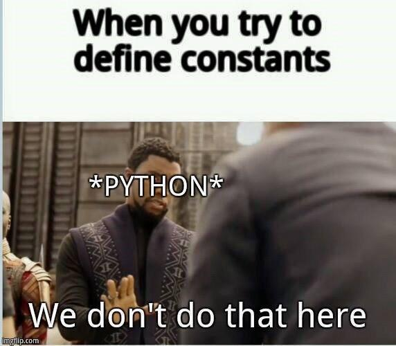
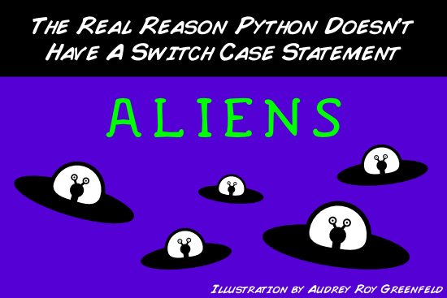

Lời mở đầu
Bạn học lập trình để làm gì? Học Python để làm gì? Trước khi bắt đầu bài viết này, mình đã có một vài cuộc nói chuyện cũng như tham khảo ý kiến của nhiều người, bao gồm cả những bạn đã và đang là lập trình viên và những bạn đang theo học hoặc làm việc những ngành nghề không hề liên quan đến lập trình, câu trả lời cho lý do các bạn ấy học và sử dụng Python khá đa dạng, có thể rất đơn giản là hứng thú, cũng có thể là do yêu cầu công việc, hoặc đơn giản hơn lý do có thể là muốn học lập trình nên google xem nên học ngôn ngữ nào, thấy có bạn nói đến Python vậy là học Python.
Học Python có khó? Đối với mình thì Python là một ngôn ngữ rất dễ tiếp cận, ngay cả khi vốn kiến thức về lập trình của bạn rất ít hoặc hoàn toàn không có thì bạn vẫn có thể sử dụng các câu lệnh cơ bản của Python một cách dễ dàng sau 1 vài giờ học.
Nếu bạn chưa hề có kiến thức về lập trình và thấy Python khó, mình có thể đảm bảo rằng so với các ngôn ngữ khác, học Python thực sự dễ hơn rất nhiều. Code Python dễ đọc dễ viết và dễ gợi nhớ, cùng với đó là cú pháp thân thiện, kiểu dữ liệu linh hoạt giúp cho người học nhanh chóng làm quen và dễ dàng tập trung hơn vào việc học giải thuật. Rất nhiều người khuyến khích sử dụng Python là ngôn ngữ lập trình đầu tiên để học.
Nếu đã giỏi một ngôn ngữ rồi, có cần thiết phải học Python không? Tất nhiên nếu bạn thỏa mãn rồi thì không cần thiết phải học, nếu chưa, hãy thử, mình có thể đảm bảo rằng Python thực sự giải quyết được nhiều vấn đề mà các ngôn ngữ lập trình khác mất rất nhiều thời gian và công sức để giải quyết.
Hạn chế của Python là gì? Cho tới thời điểm này có lẽ tốc độ thực thi chương trình là hạn chế lớn nhất mà Python gặp phải. Dĩ nhiên bạn không thể đòi hỏi một ngôn ngữ thông dịch với kiểu dữ liệu linh hoạt phải chạy nhanh như ngôn ngữ biên dịch với kiểu chặt chẽ.
Bài viết này mình sẽ không đi sâu vào những việc như cài đặt Python như thế nào, chạy Python như thế nào ... đã có rất nhiều bài viết, hướng dẫn cho việc này rồi.
Cơ bản
Biến
Hiểu đơn giản về biến thì đây là một phần tử nhớ để lưu giá trị. Để tạo một biến trong Python:
x = 1
Ta đã tạo ra biến x có giá trị bằng 1, biến trong Python không chỉ để dùng lưu trữ giá trị số, nó có thể được dùng để lưu các giá trị khác nữa. Biến trong Python không cần được khai báo, chỉ cần gán và dùng, trình thông dịch sẽ tự động xử lý việc khai báo và quản lý biến.
a = "một chuỗi ký tự"
some_numbers = 123456 # số nguyên
some_floats = 1.23 # số thập phân
true_bool = False # giá trị boolean (chỉ có 2 giá trị đúng hoặc sai - True / False)
Biến trong Python thường được đặt tên theo quy tắc lower_case_with_underscores Biến cũng có thể được thay đổi giá trị bằng cách gán cho giá trị khác:
x = 2
Ta đã có khái niệm cơ bản về biến, đối với Python, bạn không cần phải chú ý nhiều đến các vấn đề sâu hơn về bộ nhớ như: con trỏ, địa chỉ ... như một số ngôn ngữ khác như C, C++
Việc gán giá trị cho biến là một chiều,
1 = xlà câu lệnh lỗi.
Python không có khái niệm hằng số hay constant. Nếu bạn muốn dùng hằng số, chỉ cần đơn giản tạo một biến và đừng thay đổi giá trị của nó. ●_●

Câu lệnh điều kiện
Câu lệnh điều kiện duy nhất trong Python bạn cần biết đến đó là if ... else ..., một điều kiện sẽ được kiểm tra khi thực hiện lời gọi if, nếu điều kiện đó trả về giá trị đúng thì khối câu lệnh sau mệnh đề if sẽ được thực hiện, nếu điều kiện đó trả về giá trị sai thì khối câu lệnh sau mệnh đề else sẽ được thực hiện.
a = 2
if a < 1:
print("a < 1")
else:
print("a >= 1")
Ở đây hàm print() là hàm in giá trị ra console trong Python.
Trong Python, các khối câu lệnh được sắp xếp theo tab hoặc dấu cách thẳng hàng từ trên xuống (2 hoặc 4 dấu cách), nếu bạn tự ý đặt tab hoặc các khối câu lệnh không thẳng hàng thì trình biên dịch sẽ báo lỗi.
Câu lệnh điều kiện có thể thiếu mệnh đề else:
a = 2
if a < 1:
print("a < 1")
Hoặc lồng nhiều điều kiện với nhau:
a = 2
if a < 1:
print("a < 1")
elif a < 2:
print("a < 2")
elif a < 3:
print("a < 3")
else:
print("a >= 3")
Fun fact: Python không cần switch ... case vì if ... else là đủ. Official answer.

Vòng lặp
Bạn dĩ nhiên là không muốn viết đi viết lại 100 dòng code vì muốn chạy câu lệnh 100 lần với 100 biến số khác nhau, bạn cũng không muốn viết code duyệt 1000 phần tử trong một mảng bằng cách viết đi viết lại câu lệnh 1000 lần. Trong Python, while và for là 2 vòng lặp cơ bản nhất.
Vòng lặp while
Nếu điều kiện lặp là đúng (True) thì khối câu lệnh trong vòng lặp sẽ được thực hiện đến khi nào điều kiện lặp là sai (False) hoặc gặp break.
a = 1
while a < 10:
print(a)
a += 1
Ở đây a < 10 là điều kiện lặp, khi giá trị của a tăng lên mỗi lần lặp tới khi a == 10 thì điều kiện a < 10 không còn đúng nữa, lúc đó vòng lặp kết thúc.
Nếu điều kiện lặp luôn đúng, ta sẽ có vòng lặp vô hạn, khi lập trình bạn nên cẩn thận để tránh trường hợp vòng lặp rơi vào vô hạn dẫn đến việc chương trình không thể tiếp tục chạy.
a = 10
while a > 9:
print("Tôi sẽ có người yêu sau khi vòng lặp này kết thúc")
Vòng lặp for
Cấu trúc của vòng lặp for được thể hiện như sau:
for biến_lặp in [danh sách]:
# nội dung lệnh thực hiện trong mỗi lần lặp
Giá trị cả phần tử đầu tiên của danh sách (dữ liệu kiểu danh sách , string ...) sẽ được gán cho biến_lặp, tiếp theo là thực hiện lệnh bên trong vòng lặp, sau đó là phần tử thứ 2, thứ 3 ... đến hết chuỗi hoặc gặp break

Một vài ví dụ về for loop:
#!/usr/bin/python
# Example from https://www.tutorialspoint.com/python/python_for_loop.htm
for letter in 'Python':
print 'Current Letter :', letter
fruits = ['banana', 'apple', 'mango']
for fruit in fruits:
print 'Current fruit :', fruit
print "Good bye!"
Kết quả in ra:
Current Letter : P
Current Letter : y
Current Letter : t
Current Letter : h
Current Letter : o
Current Letter : n
Current fruit : banana
Current fruit : apple
Current fruit : mango
Good bye!
Trong Python, vòng lặp for rất hay được sử dụng cùng với hàm range(). range() là hàm built-in của Python cho phép trả về một chuỗi số mà bạn có thể duyệt qua nó, các tham số đầu vào bao gồm: giá trị bắt đầu start, giá trị kết thúc stop, và bước đếm step. Các tham số này có thể có hoặc không cần thiết phải thiết lập khi gọi hàm, mời bạn xem ví dụ sau đây để hiểu thêm:
>>> list(range(10)) # range(stop)
[0, 1, 2, 3, 4, 5, 6, 7, 8, 9]
>>> list(range(1, 11)) # range(start, stop)
[1, 2, 3, 4, 5, 6, 7, 8, 9, 10]
>>> list(range(0, 30, 5)) # range(start, stop[, step])
[0, 5, 10, 15, 20, 25]
>>> list(range(0, 10, 3))
[0, 3, 6, 9]
>>> list(range(0, -10, -1))
[0, -1, -2, -3, -4, -5, -6, -7, -8, -9]
>>> list(range(0))
[]
>>> list(range(1, 0))
[]
Trên thực tế, ở Python 3, range được định nghĩa như một kiểu dữ liệu chứ không phải là một hàm trả về danh sách iterator. Bạn có thể đọc phần tiếp theo và thử sử dụng kiểu range như một list và sẽ thấy khác biệt.
Kiểu dữ liệu danh sách: List
Thay vì chỉ lưu trữ một giá trị như biến, list cho phép lưu một dãy các giá trị. List trong Python tương đương với Mảng trong các ngôn ngữ lập trình khác, điểm khác biệt là các phần tử trong một List của Python có thể có nhiều kiểu dữ liệu khác nhau. Cách cơ bản nhất để tạo một list như sau:
danh_sach = [1, 3, 5, 8, 10, 3]
danh_sach_1 = ["a", "b", "hi", (1, 2), None, True]
Để truy cập lấy giá trị của một phần tử trong List ta dùng index của phần tử đó, có thể hiểu index ở đây như vị trí của phần tử trong 1 list, cần lưu ý là chỉ số index này được bắt đầu từ 0, tính từ cuối chuỗi thì index được tính từ -1.
>>> print(danh_sach[0])
>>> 1
>>> print(danh_sach_1[2])
>>> "hi"

Lấy phần tử cuối
>>> danh_sach[-1]
3
Nếu truy xuất vượt giới hạn của list, exception IndexError sẽ được raise:
# Looking out of bounds is an IndexError
danh_sach[14]
Traceback (most recent call last):
File "<stdin>", line 1, in <module>
IndexError: list index out of range
Python cho phép truy cập list con của một list sử dụng slice (mình để nguyên vì không tìm được dịch nghĩa tương ứng). Để tránh phải viết đi viết lại nhiều lần mình sẽ mô tả lại bằng comment trong code tương ứng bên dưới. Về cơ bản, quy tắc ở đây là:
danh_sach_con = danh_sach[bắt_đầu:kết_thúc:bước_nhảy]
>>> danh_sach = [1, 3, 5, 8, 10, 3]
>>> danh_sach[2:3] # từ index = 2 tới trước index = 3
[5]
>>> danh_sach[2:9] # từ index = 2 tới trước index = 9, chú ý: index thứ 2 có thể vượt ra ngoài chuỗi (out of bound) nhưng không báo lỗi
[5, 8, 10, 3]
>>> danh_sach[2:] # bỏ phần tử đầu, chỉ lấy từ index = 2 tới hết
[5, 8, 10, 3]
>>> danh_sach[-2:] # từ index = -2 tới hết
[10, 3]
>>> danh_sach[:-2] # từ đầu tới trước index = -2
[1, 3, 5, 8]
>>> danh_sach[::2] # lấy các phần tử có index cách nhau 2 đơn vị bắt đầu từ index = 0
[1, 5, 10]
>>> danh_sach[::-1] # tạo danh sách ngược lại
[3, 10, 8, 5, 3, 1]
>>>
Để thêm một phần tử vào trong List chúng ta sử dụng append()
>>> danh_sach.append(9)
>>> print(danh_sach)
[1, 3, 5, 8, 10, 3, 9]
Xóa phần tử:
>>> print(danh_sach)
[1, 3, 5, 8, 10, 3, 9]
>>> danh_sach.pop() # xóa phần tử cuối cùng
9
>>> danh_sach.remove(3) # xóa phần tử đầu tiên tìm thấy (xóa số 3 đầu tiên)
>>> danh_sach
[1, 5, 8, 10, 3]
>>> danh_sach.remove(9) # lỗi do 9 không nằm trong danh sách
Traceback (most recent call last):
File "<stdin>", line 1, in <module>
ValueError: list.remove(x): x not in list
>>>
Tạo danh sách mới hoàn toàn:
>>> danh_sach_ref = danh_sach[:]
>>> danh_sach_ref is danh_sach
False
>>> danh_sach_2 = danh_sach # danh_sach_2 thực chất là reference của danh_sach
>>> danh_sach_2 is danh_sach
True
>>> danh_sach # Kiểm tra lại giá trị của các danh sách
[1, 5, 8, 10, 3]
>>> danh_sach_2
[1, 5, 8, 10, 3]
>>> danh_sach_ref
[1, 5, 8, 10, 3]
>>> danh_sach_ref.pop() # Thay đổi danh_sach_ref
3
>>> danh_sach # danh_sach không thay đổi
[1, 5, 8, 10, 3]
>>> danh_sach_2.pop() # Thay đổi danh_sach_2
3
>>> danh_sach # danh_sach bị thay đổi theo
[1, 5, 8, 10]
>>>
Để thêm phần tử vào danh sách, chúng ta sử dụng lệnh insert(index, value), lệnh này cho phép thêm phần tử vào một vị trí xác định
>>> danh_sach
[1, 5, 8, 10]
>>> danh_sach.insert(1, 3)
>>> danh_sach
[1, 3, 5, 8, 10]
>>>
Gộp 2 danh sách, mở rộng danh sách:
>>> danh_sach + danh_sach_ref # giá trị danh_sach và danh_sach_ref không thay đổi
[1, 3, 5, 8, 10, 1, 5, 8, 10]
>>> danh_sach.extend(danh_sach_3) # khi extend thì giá trị của danh_sach bị thay đổi
>>> danh_sach
[1, 3, 5, 8, 10, 1, 5, 8, 10]
Kiểm tra nếu phần tử nằm trong danh sách:
>>> 1 in danh_sach
False
Độ dài của danh sách:
>>> danh_sach
[1, 3, 5, 8, 10, 1, 5, 8, 10]
>>> len(danh_sach)
9
Ngoài list ra chúng ta còn có các kiểu dữ liệu danh sách tương tự khác như dictionary và tupple.
Đối với các kiểu dữ liệu danh sách, nếu không chứa dữ liệu thì giá trị của nó được đánh giá bằng False.
bool(0) # => False
bool("") # => False
bool([]) # => False
bool({}) # => False
bool(()) # => False
Còn tiếp